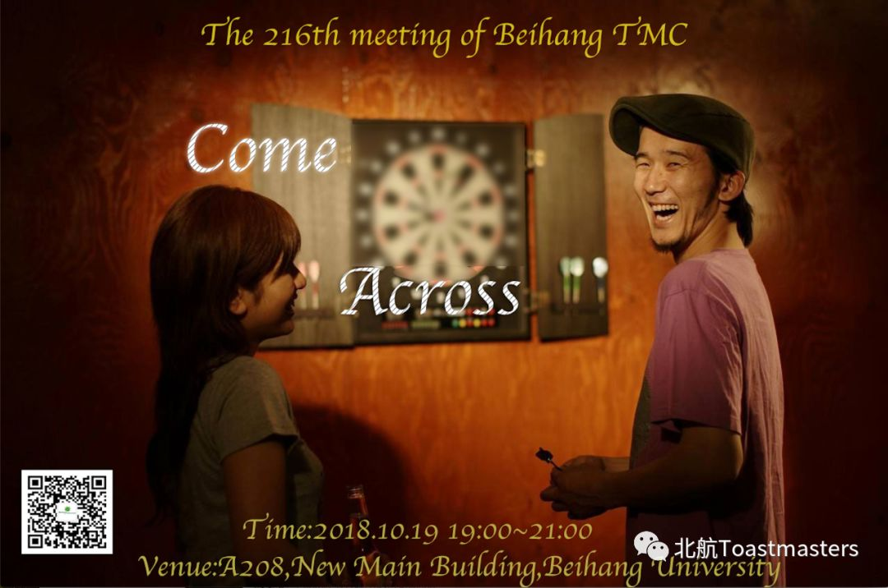

Time: 19:00-21:00, Friday, Oct 19thVenue:
Room A208, New Main Building, Beihang University
At the same time, we belong to a non-profit international organization called Toastmasters International. Beihang Toastmasters Club is a students' union.
Toastmasters International (TI) is a non-profit educational organization that operates clubs worldwide for the purpose of helping members improve their communication, public speaking, and leadership skills. You can find us by the following map of Beihang University

原文链接（公众号关闭后可能失效）：
https://mp.weixin.qq.com/s/6aFQYbxYN7Dzw27zGA7dMQ
https://mp.weixin.qq.com/s/6aFQYbxYN7Dzw27zGA7dMQ
第 491/539 篇 · 北航Toastmasters英文演讲俱乐部公众号存档
本页为抢救式本地归档，图文已永久保存。
本页为抢救式本地归档，图文已永久保存。